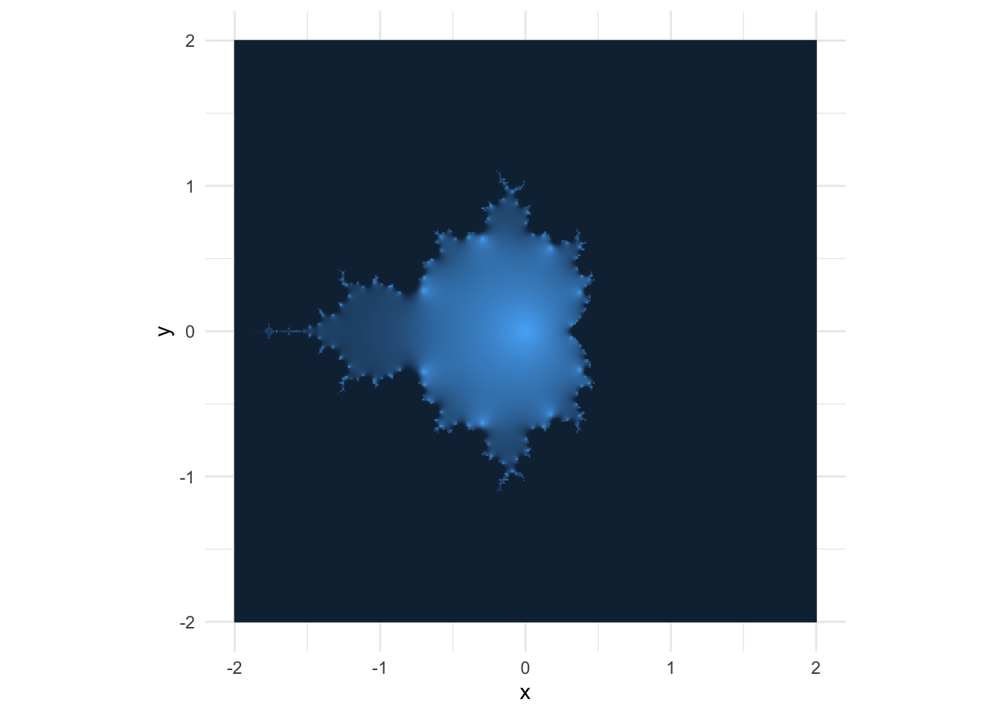

# power must be an integer >= 0
pow_iter = function(x, power) {
if (power == 0) { return(1) }
if (power == 1) { return(x) }
# the iterative part:
result = x
for (i in 2:power) {
result = result * x
}
return(result)
}Intro: Iteration and Recursion
One fun lessons in the Structure and Interpretation of Computer Programs1 is the translation of functions between iterative and recursive approaches.
To show the difference between iterative and recursive procedures, let’s make a quick example where we raise a number to some (positive integer) power. We could implement an iterative approach in R using a for loop. We call this iterative because each pass through the loop is an “iteration”.
Or we could do this with a recursive function. We call this function “recursive” because the function calls itself in its own implementation.
pow_rec = function(x, power) {
if (power == 0) { return(1) }
if (power == 1) { return(x) }
# here be recursion
x * pow_rec(x, power - 1)
}The recursive approach uses the fact that \(x^n = x \times x^{n - 1}\) to decompose your query into an expression that looks like \(x \times x \times x \ldots \times x\) which is evaluated all at once. And, I gotta say, recursion feels way slicker. We have just one powerful line of code that accomplishes as much as the four-line iterative approach, most of which was simply boilerplate for passing data in and out of the loop. The recursive implementation may be a bit of a brain-bender at first, but the more you use recursion, the more comfortable you get with it, and the more opportunities you find to use it productively.
For completeness, let’s verify that the approaches agree.
(example = 7^6)
## [1] 117649
pow_iter(7, 6) == example
## [1] TRUE
pow_rec(7, 6) == example
## [1] TRUEThis blog post will employ this duality between recursion and iteration to create images of the Mandelbrot set using R. Although there are plenty of other blog posts that visualize the Mandelbrot set in R,2 I have only seen them implement an iterative approach with a loop. But the Mandelbrot set is mathematically defined with recursion! So we ought to be able to implement a recursive approach that is, hopefully, more succinct and slick.3
In the remainder of this post, we will quickly introduce the math behind the Mandelbrot set, define a recursive function to produce “Mandelbrot data”, and visualize the famous fractal image that the math produces.
The Mandelbrot Set
If you have heard of the Mandelbrot set, it was probably because it is used to create a neat fractal image.

But the Mandelbrot set is not an image. It is a set of complex numbers. You remember complex numbers, right? A complex number \(x + yi\) has a “real” component \(x\) and an “imaginary” component \(yi\) where the “imaginary number” \(i\) is equal to \(\sqrt{-1}\).
Formally, a complex number \(c\) is a member of the Mandelbrot set if the function \[\begin{align} z_{n + 1} &= z_{n}^{2} + c \end{align}\] initialized at \(z = 0\) does not diverge to infinity as \(n\) increases.
Let’s try it out with \(c = 1\), which as a complex number is \(1 + 0i\). \[\begin{align} z_{n + 1} &= z_{n}^{2} + c \\ 1 &= 0^2 + 1 \\ 2 &= 1^2 + 1 \\ 5 &= 2^2 + 1 \\ 26 &= 5^2 + 1 \\ 677 &= 26^2 + 1 \end{align}\] When \(c = 1\) the function explodes as \(n\) increases, so 1 is not a member of the Mandelbrot set.
What about \(i\), a.k.a. \(0 + 1i\)? \[\begin{align} z_{n + 1} &= z_{n}^{2} + c \\ i &= 0^2 + i \\ -1 + i &= i^2 + i \\ -1i &= (-1 + i)^2 + i \\ -1 + 1i &= (-1i)^2 + i \\ -1i &= (-1 + 1i)^2 + 1 \end{align}\] For \(i\), the function oscillates back and forth with \(n\), so \(i\) is a member of the Mandelbrot set.
Okay, some complex numbers diverge others don’t. Where does the fractal come from? The fractal image actually comes from sending an entire grid of complex numbers through the function, iterating the function a large number of times, and then coloring the points according to their values after \(n\) iterations.
We will start working on that now.
A Recursive Mandelbrot Function
Like I said above, this isn’t the first post to implement some Mandelbrot code in R. But we will implement it as a recursive function, which is a bit special. If we write it well, we should only have to write the main equation, \(z_{n + 1} = z_{n}^{2} + c\), and an initial condition. Lo and behold, here is such a function called mandelbrot:
mandelbrot = function(coord, iterations) {
if (iterations == 0) return(coord) # initial condition
mandelbrot(coord, iterations - 1)^2 + coord
}Let’s step through the code to make sure we understand how this works.
- The function takes a complex number
coordand a total number of iterationsiterations. - The first line declares an initial condition. When the number of iterations is 0, we return the
coorditself. But why would the number of iterations ever be 0 if the whole point of this function is to iterate it somennumber of times? Well… - The last line of the function calls the
mandelbrotfunction itself, but on a decremented number of iterations. This gives us the recursive behavior: the value \(z_{n+1}\) is a function of \(z_{n}\). We just re-express this by saying the value \(z_{n}\) is a function of \(z_{n-1}\).
We can confirm that this function gives us the same values as when we plugged in a few numbers above.
mandelbrot(1, 4) == 677
## [1] TRUE
mandelbrot(0 + 1i, 4) == -1i
## [1] TRUEGreat, now contrast this with the iterative approach here in the function mandelbrot_vectorized, in the last code block between lines 53 and 57. There is some sense in which an iterative approach can be “easier” to read, to be sure. The procedure is laid bare, and you can see every step the computer takes to give you the result. The recursive procedure, on the other hand, requires your imagination to see how the computer builds your procedure implicitly.
But it is “simpler” in a different sense, even if it isn’t “easier”.4 There are no indexing variables, no indexing into arrays, no manually incrementing counters. There is only the function itself and an initial condition. The recursive function depends on functionality instead of syntax. Syntax is necessarily wrapped up in the particularities of a language, whereas functionality is mathematically abstract and transferable across languages. And I find that very appealing as someone who does a lot of functional programming in languages other than R.
Plot the results
This post wouldn’t be complete if we didn’t plot the fractal. As it happens, the recursive implementation of the Mandelbrot function makes this whole process much simpler as well.
First, let’s make a grid of data (x and y), and a variable C where we represent y as an imaginary dimension.
library("dplyr")
library("tidyr")
d = crossing(
x = seq(-2, 2, length.out = 500),
y = x
) |>
mutate(C = complex(real = x, imag = y)) |>
print()
## # A tibble: 250,000 × 3
## x y C
## <dbl> <dbl> <cpl>
## 1 -2 -2 -2-2.000000i
## 2 -2 -1.99 -2-1.991984i
## 3 -2 -1.98 -2-1.983968i
## 4 -2 -1.98 -2-1.975952i
## 5 -2 -1.97 -2-1.967936i
## 6 -2 -1.96 -2-1.959920i
## 7 -2 -1.95 -2-1.951904i
## 8 -2 -1.94 -2-1.943888i
## 9 -2 -1.94 -2-1.935872i
## 10 -2 -1.93 -2-1.927856i
## # … with 249,990 more rowsOne upside of the design of our mandelbrot function is that, at least in R, it is automatically vectorized. As long as iterations is an integer, we can pass data of various shapes to coord and get reasonable results. In this case, we pass the entire C column from our data frame as a vector.
d = d |>
mutate(
mand = mandelbrot(C, iterations = 10),
projected_value = exp(-abs(mand))
) |>
print()
## # A tibble: 250,000 × 5
## x y C mand projected_value
## <dbl> <dbl> <cpl> <cpl> <dbl>
## 1 -2 -2 -2-2.000000i NaN-Infi 0
## 2 -2 -1.99 -2-1.991984i NaN+Infi 0
## 3 -2 -1.98 -2-1.983968i NaN+Infi 0
## 4 -2 -1.98 -2-1.975952i NaN-Infi 0
## 5 -2 -1.97 -2-1.967936i NaN+Infi 0
## 6 -2 -1.96 -2-1.959920i NaN+Infi 0
## 7 -2 -1.95 -2-1.951904i NaN-Infi 0
## 8 -2 -1.94 -2-1.943888i NaN-Infi 0
## 9 -2 -1.94 -2-1.935872i NaN+Infi 0
## 10 -2 -1.93 -2-1.927856i NaN+Infi 0
## # … with 249,990 more rowsNotice we did another step to project mand, which is a complex number, into the positive reals again by taking its absolute value. We do another transformation exp(-x), which, when we pass only positive numbers (hence abs()), will give us values between 0 and 1. Values on this scale will be much easier for continuous color palettes to differentiate in a graphic.
And now the finale: we plot the whole thing. ggplot makes this pretty easy with geom_raster, we just map the color of the pixel (the fill aesthetic) to exp(-abs(mand)). I won’t do much else to refine the graphic so you can see what’s going on.
library("ggplot2")
ggplot(d) +
aes(x = x, y = y) +
geom_raster(aes(fill = projected_value), show.legend = FALSE) +
coord_fixed() +
theme_minimal()
Footnotes
A classic programming book. You can read it online for free as HTML or as a PDF↩︎
There is even an R package called
mandelbrotwhich although it dispatches the implementation to C, also uses iteration.↩︎We will also use newer plotting tools to visualize the results—
ggplotinstead ofgraphics::imagelike the older posts.↩︎